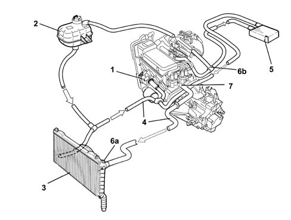
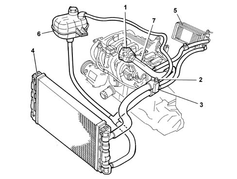
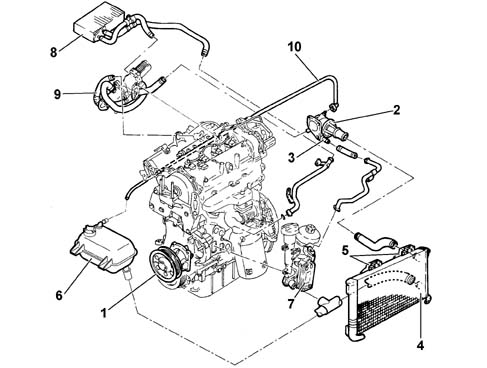
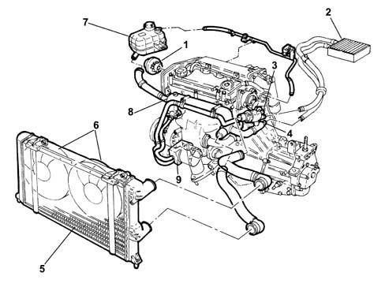
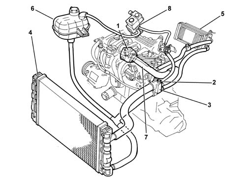

INTRODUCTION - ENGINE COOLING
- Path
- Descriptions > 10 ENGINE > 1088 ENGINE COOLING > INTRODUCTION - ENGINE COOLING
- Kind
- system description
- Applies to
- engines: 1.2 8v, 1.6 16v, 1.3 JTD 16V, 1.9 JTD 8V; all production periods; only with equipment: BIPOWER
- Interactive page
- https://sloeber94.github.io/elrnDB-fDbl/en/#/2551023
Applies to: engines: 1.2 8v; all production periods
The engine cooling circuit consists of:
- pump (1)
- expansion tank with cap incorporating 1.4 bar vent valve (2)
- cooling radiator (3)
- hoses (4)
- car interior heating radiator (5)
- vent plugs (6a)-(6b)-(6c)
- thermostat (7)

DESCRIPTION
The engine cooling circuit maintains the temperatures at constant working temperature (90° ÷ 100° C), also supported by engine fan inserts.
The main function of the engine cooling circuit is to draw fluid from the radiator (3) and send it to the pump (1), which collects the fluid and circulates it into the engine. After absorbing heat from the engine, the fluid emerges and goes to both the radiator (3) and the heater (5), and also the expansion tank (2) to top up the level. Over this route, the fluid dissipates heat taken from the engine and is ready for another engine cooling cycle.
A ≅ 88° C thermostat (8) begins to open until it has opened through its full travel to 100° C. Under these conditions, the coolant flows through the entire radiator (3) to dissipate heat taken up from the engine.
DESCRIPTION OF FILLING OF COOLING SYSTEM
The enging cooling system should only be filled or topped up with the engine cold.
Open bleed cap (6a) on radiator (3), fill with coolant through the expansion tank cap (2) until fluid emerges through cap (6a), tighten cap (6a) and finish filling to the MAX level on the expansion tank.
Continual bleeding (6b) during the filling stage ensures air is removed from the circuit.
Warm up the engine until the radiator fan has come on twice; allow the engine to cool down to ambient temperature, then check and if necessary top up the level in the expansion tank.
Applies to: engines: 1.6 16v; all production periods
The engine cooling circuit consists of:
- Water pump (1)
- Engine coolant temperature sensor (2) (see 1056)
- Thermostat (3)
- Radiator (4)
- Heater unit (5)
- Reservoir (6)
- Rigid pump water inlet pipe (7)

Applies to: engines: 1.3 JTD 16V; all production periods
COOLING SYSTEM

1 - Water pump
2 - Engine coolant temperature sensor
3 - Thermostat
4 - Radiator
5 - Electric fan
6 - Reservoir
7 - Engine oil heat exchanger
8 - Vehicle interior heating radiator
9 - E.G.R. exhaust gas heat exchanger
10 - Water recirculation pipe
Applies to: engines: 1.9 JTD 8V; all production periods
VIEW OF ASSEMBLY
.

1, Water pump
2, Heater unit
3, Engine coolant temperature sensor (see 1060)
4, Thermostat
5, Radiator
6, Electric fans
7, Supply reservoir
8, Rigid water inlet pipe to pump
9, Water-oil exchanger
Applies to: engines: 1.6 16v; all production periods; only with equipment: BIPOWER
The engine cooling circuit consists of:
- Water pump (1)
- Engine coolant temperature sensor (2) (see 1056)
- Thermostat (3)
- Radiator (4)
- Heater unit (5)
- Reservoir (6)
- Rigid pump water inlet pipe (7)
- Methane pressure reducer (8).
